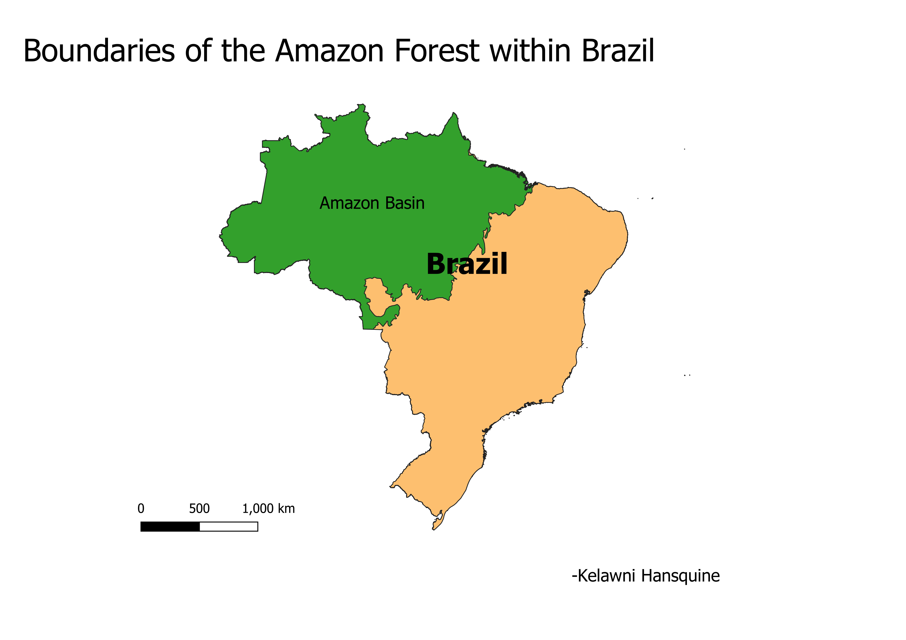
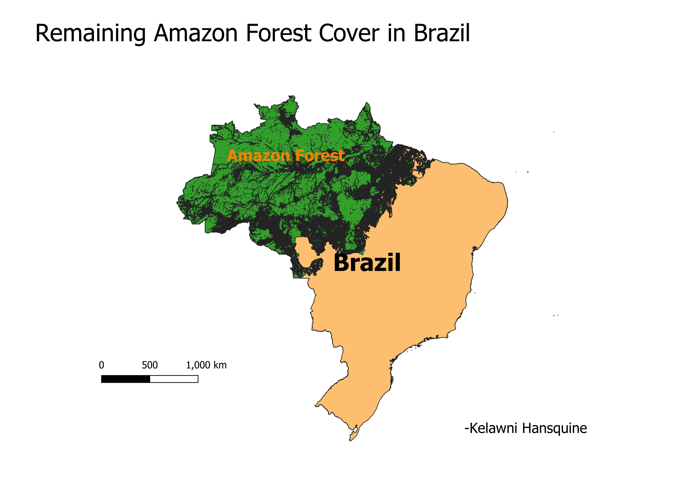

Homework 10: Geoprocessing Analysis
Kelawni Hansquine
These maps look at the difference in forest cover in Brazil to address the question how has forest cover changed as a result of deforestation in the Amazon.
For the first map, I started with the question of how much land in Brazil is considered to be part of the Amazon Forest. I used the intersection function on the Amazon Forest
layer with Brazil to show this. The second map addresses the question of how much of the area in Brazil is still forested. I created an intersection with a deforestation layer and Brazil, and I
then used the difference tool to remove parts of the Amazon layer that overlap with the deforestation layer, leaving only forested areas in Brazil as of 2007. Comparing the two
maps demonstrates the difference in Amazon forest coverage between 1988 and 2007.

Data Sources
New Layers